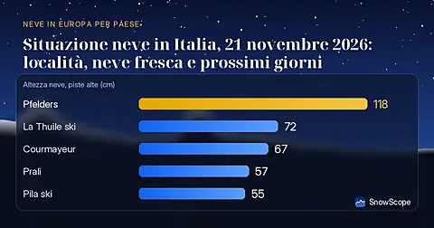

Bollettino neve Italia: altezza neve, neve fresca e prossimi giorni
In Italia oggi circa 30.400 km² di rilievi sono bianchi, il 32 % delle montagne e colline mappate del paese. Sono 2.260 km² in più di ieri. La località più innevata è La Thuile ski, con 78 cm in quota. Fino a 32 cm di neve fresca potrebbero cadere sui versanti più nevosi nella settimana.
Le previsioni neve in tempo reale per La Thuile ski nell'app SnowScopeAltezza neve, allerte powder e mappa 3D, gratis.Oggi in breve
| Superficie bianca | 30.400 km² |
|---|---|
| Quota dei rilievi | 32 % |
| Neve fresca max. in 24 h | 5 cm |
| Neve fresca max. in 3 giorni | 43 cm |
| Prossimi 3 giorni (versanti più nevosi) | 32 cm |
| Prossimi 7 giorni | 32 cm |
| Bianco in prevalenza da | 1.400 m |
| Località con neve in quota | 197 su 238 |
Gli ultimi sette giorni
Il 18 novembre erano bianchi circa 19.640 km²; oggi 30.400 km².
La copertura è cresciuta di 10.760 km² in questi giorni.
La nevicata di tre giorni più forte del periodo ha raggiunto 71 cm (al 20 novembre).
Le località più innevate oggi
La Thuile ski è in testa con 78 cm in quota.
Seguono Courmayeur (74 cm), Prali (61 cm), Pontechianale (59 cm) e Macugnaga (58 cm).
| Località | In quota | Fresca, 3 g | Prossimi 3 g | Cima |
|---|---|---|---|---|
| La Thuile ski | 78 cm | 73 cm | 13 cm | 2.608 m |
| Courmayeur | 74 cm | 79 cm | 12 cm | 2.749 m |
| Prali | 61 cm | 28 cm | 25 cm | – |
| Pontechianale | 59 cm | 29 cm | 24 cm | 2.659 m |
| Macugnaga | 58 cm | 25 cm | 35 cm | 2.877 m |
Dove arriva la neve
Fino a 32 cm sono attesi sui versanti più nevosi nei prossimi tre giorni, e fino a 32 cm nella settimana.
Il giorno più nevoso sembra mercoledì 25 novembre, con fino a 26 cm.
Negli ultimi tre giorni la neve fresca è caduta soprattutto su Valle d'Aosta, Alpi piemontesi e Appennino centrale.
La seconda settimana potrebbe aggiungere fino a 11 cm dove nevica di più.
La neve per quota
Quota per quota: 500-1.000 m: in media 0 cm, 2 % bianco; 1.000-1.500 m: in media 1 cm, 31 % bianco; 1.500-2.000 m: in media 5 cm, 79 % bianco; 2.000-2.500 m: in media 14 cm, 98 % bianco; sopra 2.500 m: in media 30 cm, 99 % bianco.
Il suolo è bianco in prevalenza da circa 1.400 m in su.
Organizzare una gita
Sopra 2.000 m il suolo è quasi tutto bianco (98 % coperto): lì le piste hanno un fondo continuo.
Tra 1.000 m e 2.000 m la copertura è a chiazze, circa 31 % bianco: erba e sassi tra la neve.
Le località con gli impianti più alti sono la scelta più sicura: Macugnaga (2.877 m), Courmayeur (2.749 m) e Pontechianale (2.659 m).
Se potete scegliere il giorno, andate dopo mercoledì 25 novembre: la neve fresca avrà il tempo di assestarsi e le strade di essere pulite.
Giorno per giorno
- martedì 24 novembre · 30.400 km² bianchi, fino a 43 cm di neve fresca in tre giorni, in testa La Thuile ski (78 cm) · La copertura nevosa dell'Italia è aumentata di 11.110 km² in sette giorni
- lunedì 23 novembre · 28.200 km² bianchi, fino a 47 cm di neve fresca in tre giorni, in testa La Thuile ski (82 cm)
- domenica 22 novembre · 30.500 km² bianchi, fino a 57 cm di neve fresca in tre giorni, in testa La Thuile ski (84 cm) · La neve autunnale in Italia è insolitamente profonda? Sì—101 cm a La Thuile ski
- sabato 21 novembre · 24.510 km² bianchi, fino a 55 cm di neve fresca in tre giorni, in testa Pfelders (118 cm) · Situazione neve in Italia, 21 novembre 2026: località, neve fresca e prossimi giorni
- venerdì 20 novembre · 20.940 km² bianchi, fino a 71 cm di neve fresca in tre giorni, in testa Monterosa Ski (128 cm) · Neve in Italia oggi: altezza del manto nevoso e neve fresca, 20 novembre 2026
- giovedì 19 novembre · 24.470 km² bianchi, fino a 59 cm di neve fresca in tre giorni, in testa La Thuile ski (64 cm) · Alpi Italiane: 215 cm di neve in Valle d'Aosta questa settimana
- mercoledì 18 novembre · 19.640 km² bianchi, fino a 44 cm di neve fresca in tre giorni, in testa La Thuile ski (56 cm) · Italia: 95 cm in arrivo nella prossima settimana, con venerdì come giorno più intenso
Domande e risposte
C'è neve in Italia adesso?
Sì. Circa 30.400 km² di rilievi sono bianchi, il 32 % delle montagne mappate. La località più innevata è La Thuile ski, con 78 cm in quota.
Dove c'è più neve in Italia oggi?
La Thuile ski è in testa con 78 cm in quota. Seguono Courmayeur (74 cm), Prali (61 cm) e Pontechianale (59 cm).
Nevicherà in Italia questa settimana?
Fino a 32 cm sono attesi sui versanti più nevosi nei prossimi tre giorni, e fino a 32 cm nella settimana. Il giorno più nevoso sembra mercoledì 25 novembre, con fino a 26 cm.
Da che quota c'è neve in Italia?
Il suolo è bianco in prevalenza da circa 1.400 m in su.
Quanta neve fresca è caduta in Italia negli ultimi tre giorni?
Fino a 43 cm sui versanti più nevosi, di cui 5 cm nelle ultime 24 ore. Almeno 5 cm sono caduti su circa 25.580 km². Negli ultimi tre giorni la neve fresca è caduta soprattutto su Valle d'Aosta, Alpi piemontesi e Appennino centrale.
Quante località sciistiche in Italia hanno neve?
197 delle 238 località seguite hanno oggi neve in quota. Neve in quota non significa impianti aperti: verificate prima di partire.
Articoli su Italia

L'Italia ha guadagnato una copertura nevosa significativa in una settimana, con la Valle d'Aosta che ha ricevuto 176 cm in 72 ore. SnowScope mostra 30.400 km² bianchi il 24 novembre.

L'Italia ha 101 cm a La Thuile ski il 22 novembre, tre volte la profondità normale per questa data. La Valle d'Aosta ha registrato 242 cm in 72 ore.

164 stazioni italiane hanno neve oggi. Pfelders guida con 118 cm sui pendii superiori. Fino a 55 cm sono caduti in tre giorni.